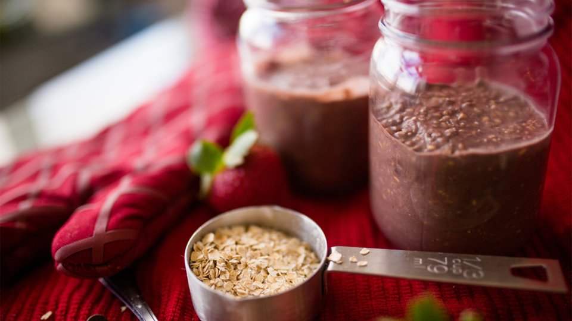

Overnight Protein Oats

Description
Any recipe that does the heavy lifting while you're sleeping is a must for a serious meal prepper. This one also boasts a hit of espresso for those java lovers out there who need an extra kick to start their day. So you can have your coffee and eat it, too!
Protein and caffeine are the one-two punch you need to jump-start your morning and stay alert and focused all day!
Ingredients
- 1 cup rolled oats
- ¾ cup unsweetened almond milk
- 2 espresso shot
- 1 scoop(s) MFIT Supps Iso Whey Protein Powder
- 2 tbsp chocolate protein powder
- 1½ tbsp maple syrup
Directions
- Combine all the ingredients in a jar. Secure the lid and shake to combine completely.
- Store the jar in the fridge overnight.
- Open the jar the next morning and enjoy. Top with chocolate chips, sliced banana, or a drizzle of maple syrup.